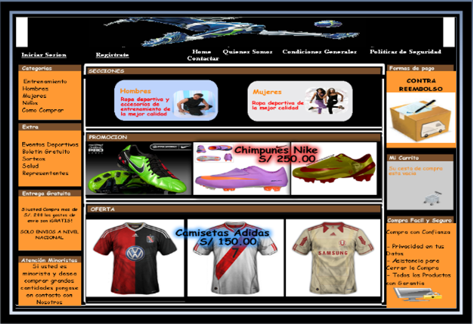
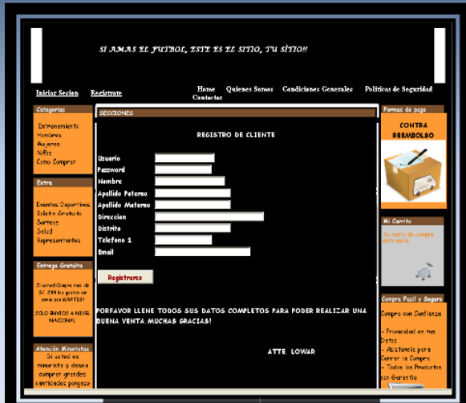
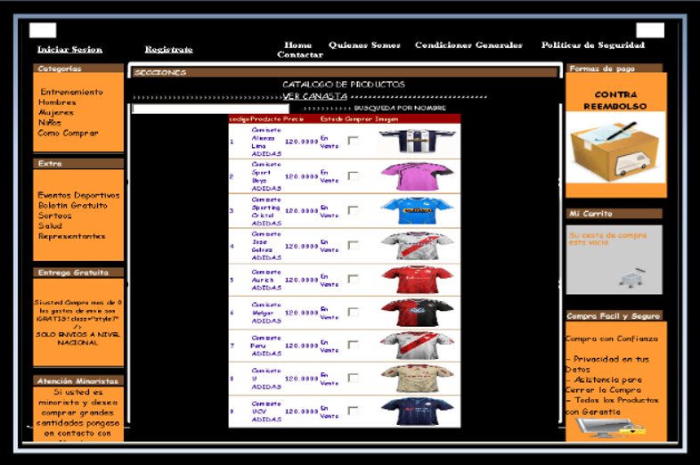
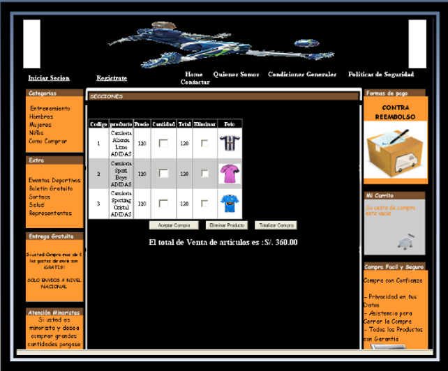

- Introduccion
- Un carrito de compras o tienda virtual, se reifiere a un comercio convencional que usa como medio principal para realizar sus ventas un sitio web.
- Los vendedores de productos o servicios ponen a disposición de sus clientes un sitio web en el cual los clientes pueden observar imágenes de los productos y finalmente adquirirlos.
- Este servicio le da al cliente rapidez en la compra, la posibilidad de hacerlo desde cualquier lugar y a cualquier hora.
- Tipos de pagos
- Tìpicamente estos productos se pagan con tarjeta de crédito y se le envía por correo al cliente.
- Existen otras opciones como paypal, tarjetas de débito, transferencias de banco.
- Diseño de páginas web principales

- Registrar cliente

- Listado de productos para agregar al carrito

- Agregar al carrito
